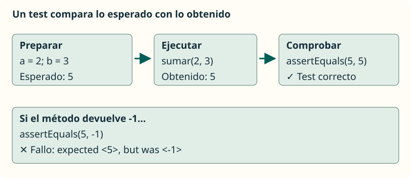
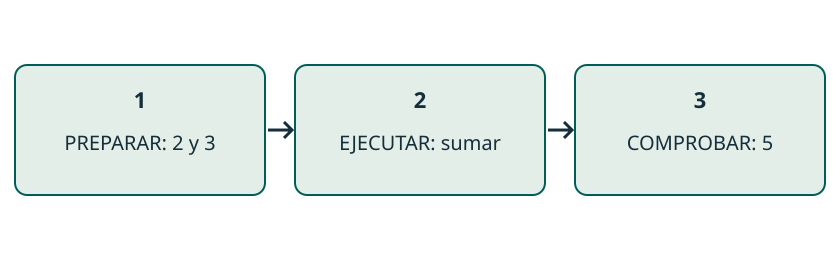
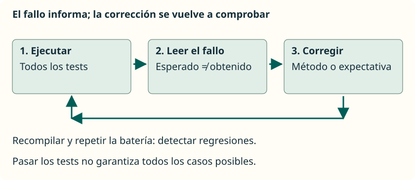
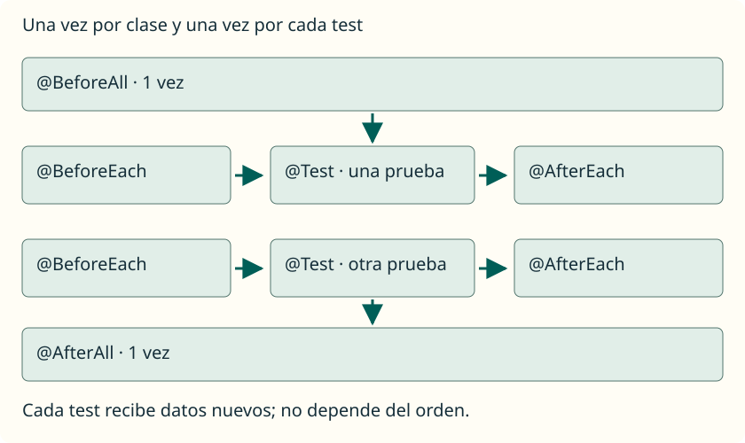

Testing con JUnit
JAVA / JUNIT
Probar una tarea pequeña
Un test unitario fija una entrada y el resultado esperado.
JUnit llama al método y comprueba el resultado por nosotros. Podemos repetir la prueba tras cambiar el código; los casos elegidos determinan qué errores podemos detectar.
assertEquals(5, Operaciones.sumar(2, 3));
JAVA / EJEMPLO DESARROLLADO
Primero fijamos qué debe hacer sumar
El resultado esperado se decide con el problema, antes de ejecutar.
Para 2 y 3 esperamos 5. Para 8 y 0 esperamos 8. Si tomamos como esperado lo que devuelve el programa, una implementación incorrecta podría confirmarse a sí misma.
public class Operaciones {
public static int sumar(int a, int b) {
return a + b;
}
}JAVA / JUNIT
Preparar el proyecto
Código y tests en carpetas separadas; JUnit dentro de lib.
En VS Code, abrimos la carpeta completa y configuramos src, test y el JAR. Test Runner for Java ejecuta los tests; no necesitamos Maven, Gradle ni un main en la clase de pruebas.
src/Operaciones.java
test/OperacionesTest.java
lib/junit-platform-console-standalone-1.13.4.jar
.vscode/settings.jsonJAVA / EJEMPLO DESARROLLADO
Conectar las carpetas con VS Code
El editor necesita encontrar tanto los fuentes como el JAR.
Abre la carpeta completa con Extension Pack for Java. Guarda este archivo en .vscode/settings.json; el JAR autónomo 1.13.4 de los apuntes debe estar en lib. sourcePaths incorpora los tests como código Java y referencedLibraries resuelve JUnit.
{
"java.project.sourcePaths": ["src", "test"],
"java.project.outputPath": "bin",
"java.project.referencedLibraries": [
"lib/**/*.jar"
]
}JAVA / EJEMPLO DESARROLLADO
Una clase de test completa
Los imports conectan las anotaciones y aserciones con JUnit Jupiter.
@Test pertenece a org.junit.jupiter.api. El import static permite escribir assertEquals sin anteponer Assertions. La clase de prueba no necesita main: el ejecutor encuentra y llama sus métodos de test.
import org.junit.jupiter.api.Test;
import static org.junit.jupiter.api.Assertions.*;
class OperacionesTest {
@Test
void sumarDosPositivos() {
assertEquals(5, Operaciones.sumar(2, 3));
}
}JAVA / JUNIT
Marcar y comprobar
@Test identifica una prueba; la aserción expresa lo que debe ocurrir.
El método de test devuelve void y no es static. El primer argumento de assertEquals es el esperado, y el segundo es el resultado de la llamada.
@Test
void sumarDosPositivosDevuelveSuSuma() {
int obtenido = Operaciones.sumar(2, 3);
assertEquals(5, obtenido);
}JAVA / EJEMPLO DESARROLLADO
Preparar, ejecutar y comprobar
Un test cuenta una historia de tres pasos.
Preparar fija los datos. Ejecutar llama al método que queremos probar. Comprobar compara el resultado con una referencia conocida. Mantener visibles estas tres partes ayuda a localizar el origen de un fallo.
@Test
void sumarDosPositivos() {
int a = 2, b = 3;
int obtenido = Operaciones.sumar(a, b);
assertEquals(5, obtenido);
}
JAVA / EJEMPLO DESARROLLADO
assertEquals: un valor concreto
assertEquals(esperado, obtenido) expresa igualdad de valores.
Con enteros, 5 y 5 coinciden; 5 y -1 no. Mantener el esperado en primer lugar permite leer el informe correctamente. El mensaje opcional explica qué promesa ha fallado.
Revelar el razonamiento
Pasa si sumar devuelve 5. Si resta y devuelve -1, falla: expected <5> but was <-1>. Un println no produce esta comprobación.
assertEquals(5, Operaciones.sumar(2, 3),
"2 + 3 = 5");JAVA / EJEMPLO DESARROLLADO
assertTrue: esperamos una condición cierta
Una propiedad booleana se comprueba sin inventar un número esperado.
esPar(8) debe devolver true porque el resto de dividir 8 entre 2 es cero. Si esPar devuelve false, el test falla. La aserción no llama a main ni lee una respuesta de la consola.
Revelar el razonamiento
Pasa: true. Error deliberado: usar numero % 2 != 0 devuelve false y hace fallar esta comprobación.
// Dentro de Operaciones:
public static boolean esPar(int numero) {
return numero % 2 == 0;
}
// Dentro de un @Test:
assertTrue(Operaciones.esPar(8));JAVA / EJEMPLO DESARROLLADO
assertFalse: false puede ser lo correcto
Un test pasa cuando la respuesta coincide con la prometida.
Para 7, esPar debe responder false. assertFalse espera esa respuesta; no significa que queramos que el test falle. Probar un par y un impar detecta un método que devolviera siempre true.
Revelar el razonamiento
Pasa si devuelve false. Falla si devuelve true. EN PALABRAS SENCILLAS: preguntar «¿es par?» y recibir «no» puede ser exactamente la respuesta correcta.
@Test
void rechazaUnImpar() {
assertFalse(Operaciones.esPar(7));
}JAVA / JUNIT
Elegir casos diferentes
Los límites suelen descubrir errores que un caso normal no revela.
Una nota válida está entre 0 y 10, ambos incluidos. Probar 5 no distingue entre >= 0 y > 0; probar cero sí permite detectar ese cambio.
Ver la explicación
Cero debe admitirse; la condición > 0 lo rechaza. Cinco pasa con ambas condiciones y no distingue el error.
assertTrue(Operaciones.esNotaValida(0));
assertTrue(Operaciones.esNotaValida(10));
assertFalse(Operaciones.esNotaValida(-0.1));
assertFalse(Operaciones.esNotaValida(10.1));JAVA / EJEMPLO DESARROLLADO
Elegir casos que distingan errores
Probar varias veces el mismo tipo de entrada aporta poca información nueva.
En esNotaValida admitimos de 0 a 10, incluidos. Un caso interior comprueba la situación normal. Los extremos y sus vecinos detectan límites mal escritos; cada caso tiene su propio motivo.
Revelar el razonamiento
Con nota > 0, el test de 0 falla; con nota < 10, el de 10 falla. El caso 5 pasa con ambos errores.
// Entrada Esperado Motivo
// 5 true interior
// 0 true límite inferior
// 10 true límite superior
// -0.1 false fuera por abajo
// 10.1 false fuera por arribaJAVA / EJEMPLO DESARROLLADO
Cadenas: los espacios también cuentan
assertEquals compara el contenido de String.
El contrato de prepararSaludo promete «Hola, » seguido del nombre. Un espacio ausente es un resultado distinto. Comparar con == no es aquí la forma de expresar igualdad de contenido.
Revelar el razonamiento
Pasa con "Hola, Ana". Falla con "Hola,Ana" o "Hola, Luis". El test nos obliga a concretar el formato prometido.
assertEquals("Hola, Ana",
Operaciones.prepararSaludo("Ana"));JAVA / JUNIT
Comprobar también los efectos
Un método que crea una copia debe conservar el array original.
assertArrayEquals revisa las casillas. Comprobamos el resultado y el original porque devolver valores correctos no basta si hemos cambiado datos que debían conservarse.
int[] original = {2, 5};
int[] nuevo = Operaciones.crearIncrementado(original);
assertArrayEquals(new int[] {3, 6}, nuevo);
assertArrayEquals(new int[] {2, 5}, original);JAVA / EJEMPLO DESARROLLADO
assertArrayEquals: revisar cada casilla
Se comparan la longitud, los valores y su orden.
Para el resultado esperado {3, 6}, {6, 3} falla en el índice 0 y {3} falla por longitud. Dos arrays distintos pueden contener los mismos datos; assertEquals no recorre sus casillas.
Revelar el razonamiento
Pasa aunque sean dos arrays diferentes. EN PALABRAS SENCILLAS: revisamos el contenido de dos cajas, casilla por casilla.
int[] esperado = {3, 6};
int[] obtenido = {3, 6};
assertArrayEquals(esperado, obtenido);JAVA / EJEMPLO DESARROLLADO
Un resultado correcto puede ocultar un efecto incorrecto
Incrementar el original y devolverlo incumple la promesa de crear una copia.
Con {2, 5}, una implementación defectuosa puede devolver {3, 6} y superar la primera aserción. La segunda detecta que también ha cambiado el original. Si la primera falla, la segunda ya no se ejecuta normalmente.
Revelar el razonamiento
La corrección es escribir en un array nuevo, como en Funciones. No basta con que el resultado parezca correcto.
// Error deliberado dentro del método:
for (int i = 0; i < datos.length; i++) {
datos[i]++;
}
return datos;JAVA / JUNIT
Leer un fallo
Expected describe lo pedido; was muestra lo obtenido.
Si sumar resta por error, 2 y 3 producen -1. El test esperaba 5. La línea de la aserción ayuda a encontrar la comprobación; la causa está en el método de aplicación.
Revelar la corrección
La tarea es sumar. Corrige a return a + b; y repite todos los tests. No cambies el esperado a -1.
// Error deliberado en sumar:
return a - b;
expected: <5> but was: <-1>JAVA / JUNIT
Corregir y repetir
Una corrección debe conservar los comportamientos que ya funcionaban.
Recuperamos la suma, recompilamos y ejecutamos toda la batería. Esto ayuda a detectar regresiones. No cambiamos el esperado para disimular un error.
// Suma correcta:
return a + b;
// Todas las pruebas deben volver a pasar.
JAVA / JUNIT
Cero tests no es éxito
Antes de interpretar el resultado, comprueba que las pruebas se han ejecutado.
El primer ejemplo contiene un test; el contador aumenta al añadir más pruebas. Si no aparece ninguno, revisa la anotación, los imports y la configuración de carpetas y biblioteca.
@Test // org.junit.jupiter.api.Test
void sumarCeroConservaElNumero() {
assertEquals(8, Operaciones.sumar(8, 0));
}JAVA / EJEMPLO DESARROLLADO
Ejecutar y leer el contador en VS Code
Ejecuta el test con Run Test o desde el panel Testing.
Con la clase inicial debe ejecutarse una prueba. Tras añadir más métodos @Test, el contador aumenta. Una barra sin fallos con cero pruebas no demuestra el comportamiento; revisa descubrimiento, imports y biblioteca antes de interpretar el resultado.
// Ejemplo inicial, sin errores:
// Tests found: 1
// Tests started: 1
// Tests successful: 1
// Tests failed: 0JAVA / JUNIT
Elegir la aserción
Cada comprobación responde a una pregunta diferente.
assertEquals compara un valor; assertTrue y assertFalse esperan un booleano. assertArrayEquals revisa las casillas en orden. Elige según el comportamiento que debe cumplir el método.
assertEquals(5, obtenido);
assertTrue(esValida);
assertFalse(esImpar);
assertArrayEquals(esperado, nuevo);JAVA / EJEMPLO DESARROLLADO
Decimales: fijar una tolerancia
assertEquals(esperado, obtenido, tolerancia) admite una diferencia pequeña.
La media de 0.1 y 0.2 puede representarse como 0.15000000000000002. Aceptamos una diferencia de hasta 0.000001 para este ejemplo. Elegimos el margen según el problema, antes de ver un fallo.
Revelar el razonamiento
Pasa con el pequeño error de representación. Falla si el método devuelve 0.3. Aumentar la tolerancia hasta ocultar ese error falsearía la prueba.
assertEquals(0.15,
Operaciones.calcularMedia(0.1, 0.2),
0.000001);JAVA / JUNIT
Vacío y null son distintos
Una referencia no nula no garantiza un contenido correcto.
assertNotNull comprueba que existe una referencia. assertNull comprueba la ausencia acordada, como una búsqueda sin coincidencias. Un array vacío no es null: todavía tiene longitud cero.
Ver la explicación
No: existe un array vacío. assertNull espera null, no una longitud de cero.
int[] datos = new int[0];
assertNotNull(datos);
assertArrayEquals(new int[0], datos);JAVA / EJEMPLO DESARROLLADO
assertNotNull: existe, pero ¿qué contiene?
Comprobar la referencia es distinto de comprobar los datos.
crearIncrementado(new int[0]) debe devolver un array vacío. assertNotNull pasa con cualquier array existente, incluso {99}. La segunda aserción expresa que además esperamos cero elementos.
Revelar el razonamiento
Si devuelve null, falla la primera. Si devuelve {99}, pasa la primera y falla la segunda. Una caja vacía sigue siendo una caja.
int[] obtenido =
Operaciones.crearIncrementado(new int[0]);
assertNotNull(obtenido);
assertArrayEquals(new int[0], obtenido);JAVA / EJEMPLO DESARROLLADO
assertNull: la ausencia está acordada
Una búsqueda sin coincidencias puede devolver null como resultado correcto.
buscarNombre devuelve el nombre encontrado o null si no aparece. Probamos ausencia y presencia: un método que devolviera siempre null pasaría solo el primer caso, pero incumpliría el segundo.
Revelar el razonamiento
La ausencia pasa solo con null: ni "" ni "Eva" equivalen a null. Precondición del ejemplo: array y nombre buscado no nulos.
String[] nombres = {"Ana", "Luis"};
assertNull(Operaciones.buscarNombre(nombres, "Eva"));
assertEquals("Ana",
Operaciones.buscarNombre(nombres, "Ana"));JAVA / JUNIT
Preparar cada prueba
BeforeEach entrega datos nuevos a cada test.
Los métodos anotados no son tests adicionales. BeforeAll y AfterAll se ejecutan una vez por clase; BeforeEach y AfterEach rodean cada prueba. En esta configuración, solo los dos globales son static.
@BeforeEach
void prepararDatos() {
datos = new int[] {2, 5};
}
JAVA / EJEMPLO DESARROLLADO
BeforeEach: cada test empieza de nuevo
La preparación común crea datos independientes antes de cada prueba.
JUnit crea por defecto una instancia por test. El campo datos pertenece a esa instancia y BeforeEach lo inicializa. Un test puede modificar su array sin preparar la entrada del siguiente; no debemos depender del orden de ejecución.
Revelar el razonamiento
Añadir import org.junit.jupiter.api.BeforeEach. Este fragmento va dentro de una clase de tests con los imports de Test y Assertions.
private int[] datos;
@BeforeEach
void prepararDatos() {
datos = new int[] {2, 5};
}
@Test
void tieneDosElementos() {
assertEquals(2, datos.length);
}JAVA / EJEMPLO DESARROLLADO
Cuatro momentos, dos pruebas
All se aplica a la clase; Each rodea cada test.
BeforeAll y AfterAll son static en el ciclo predeterminado. BeforeEach y AfterEach no son static. Para dos tests, hay una preparación global, dos preparaciones individuales, dos cierres individuales y un cierre global.
Revelar el razonamiento
A y B ilustran un orden posible, no una garantía. Los métodos de preparación no cuentan como tests adicionales.
BeforeAll
BeforeEach → test A → AfterEach
BeforeEach → test B → AfterEach
AfterAllJAVA / JUNIT
Describir no es comprobar
DisplayName pone un nombre legible; la aserción verifica la promesa.
Conserva @Test para que JUnit reconozca la prueba. Un mensaje opcional de assertEquals explica el fallo, pero no cambia el resultado esperado ni convierte un println en una comprobación.
@Test
@DisplayName("Sumar dos positivos")
void sumarDosPositivosDevuelveSuSuma() {
assertEquals(5, Operaciones.sumar(2, 3));
}JAVA / EJEMPLO DESARROLLADO
Separar un fallo de test de un error de compilación
Un import sin resolver impide ejecutar; una aserción fallida compara un resultado.
Si no se reconoce org.junit.jupiter.api, revisa el JAR y la configuración. Si el informe muestra expected y was, el test sí llegó a comprobar un valor. Primero identifica en qué fase estamos para corregir el problema adecuado.
Revelar el razonamiento
Tras corregir el método, vuelve a ejecutar toda la batería. Pasar nuestros casos aporta evidencia; no demuestra que hayamos previsto todas las entradas posibles.
// Compilación: package ... does not exist
// Descubrimiento: 0 tests found
// Aserción: expected <5> but was <-1>